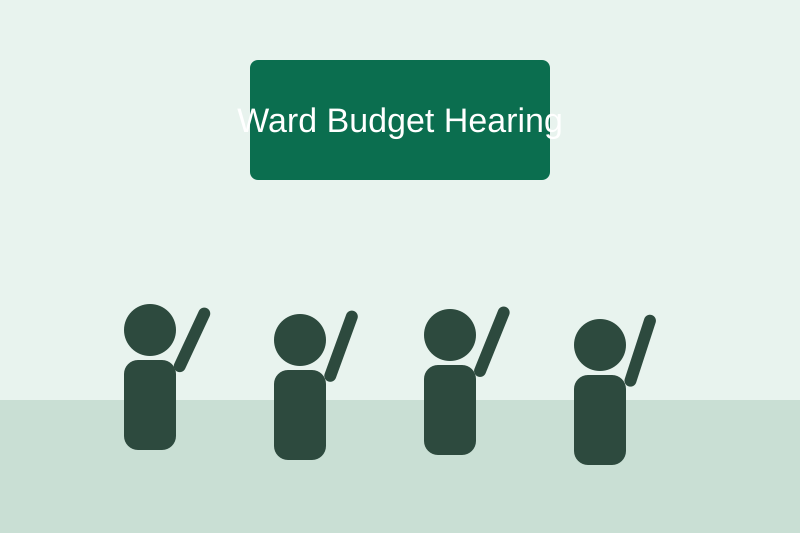

What Sisi does
Sisi is Swahili for us. It is a public participation platform for Kenya's 47 counties, piloting in Kiambu since .
Register once in your county and ward. After that you receive every county notice, draft bill and budget hearing that affects your ward, and you can respond online instead of travelling to a hall on a working day.

Who can take part
Any resident of a participating county can register, whether you are a farmer in Kalimoni, a teacher in Witeithie or a student in Theta. You do not need to be a registered voter to be heard.
Sisi supports the county's CIDP reviews and the hearings run by the CBEF, so your comments reach the people who make the decisions.
I used to miss hearings because I could not leave work. Now I can read the draft and answer from my phone.